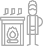

+380 (44) 338-08-29
+380 (67) 620-23-25
 INSTAGRAM
INSTAGRAM YOUTUBE
YOUTUBEО нашей компании
ООО "ТЕРМИКС УКРАИНА" является эксклюзивным дистрибьютором продукции Tulikivi в Украине. Мы напрямую сотрудничаем с финским производителем Tulikivi, поэтому нашим покупателям доступен весь модельный ряд каминов премиум-класса, а также изготовление каминов по индивидуальному заказу.
Обратившись к нам, Вы получите детальную консультацию по поводу отопления дома каминами и печами Tulikivi. Нашими консультантами становятся только те, кто прошел специальное обучение в Финляндии. Все консультанты – практики, которые уже много лет профессионально занимаются установкой каминов и печей Tulikivi и досконально знают все то, что касается их эксплуатации.
Камин будет доставлен к Вам домой и установлен «без шума и пыли» настоящими «мастерами Tulikivi» - специалистами, которые прошли стажировку в компании Tulikivi и получили сертификаты, разрешающие проведение монтажных работ.
Мы позаботились о том, чтобы сделать нашу продукцию более доступной для Вас. Именно поэтому купить камин вы можете не только в нашем головном офисе, но и у наших партнеров: каминных салонов, строительных компаний, архитекторов. При этом, где бы вы ни делали заказ, стоимость камина для вас не изменится.
Кому будет интересно
-
Дизайн-студии
-
Салоны каминов
-
Дизайнеров
-
Проектировщиков
-

Коммерческие организации, занимающиеся продажей и монтажом каминов.
Ваши выгоды работы с нами:
Вы предлагаете своим клиентам продукцию Tulikivi – мирового лидера в производстве печей - каминов премиум-класса. Известность и безупречная репутация Tulikivi – гарантия Ваших довольных клиентов
Нашим партнерам мы предоставляем всю необходимую рекламную продукцию: каталоги, буклеты. В Ваших руках будет все необходимое, чтобы привести ваших клиентов к покупке.
Вы заказываете камины у единственного представителя Tulikivi в Украине, поэтому Вы получаете оригинальные финские камины Tulikivi напрямую без посредников.
Вы можете предложить своим клиентам услугу изготовления печей - каминов по индивидуальному заказу. Это абсолютное новшество на рынке Украины.
Вы предоставляете своим клиентам не только первоклассные камины, но и отличный сервис. Доставку и монтаж всех каминов, реализуемых нашими партнерами, осуществляют опытные «мастера Туликиви», прошедшие обучение в Финляндии.
Все ваши клиенты получат 5-летнюю гарантию от производителя на камины и печи Tulikivi – Ваши издержки, связанные с обслуживанием каминов, исключены.
УЗНАТЬ УСЛОВИЯ СОТРУДНИЧЕСТВА
Почему стоит выбрать именно Tulikivi
Если Вы задумываетесь об обновлении интерьера Вашего загородного дома или же элитных апартаментов, то Вам определенно придет по душе та продукция, которую Вы можете найти на нашем сайте. Мы предлагаем Вам элитные печи-камины бренда Tulikivi, которые не только имеют красивый внешний вид, но и полностью функциональны и обеспечивают любому жилью настоящую независимость от коммунальных энергосистем. Данная продукция производится в Финляндии с использованием только самого современного оборудования и материалов, поэтому, о ее конечном качестве и дизайне Вы можете не переживать. В основе конструкции камина лежит особая вихревая топка с вторичным дожигом, а также специальная система противотока. Эти технологии являются «ноу-хау» на рынке и больше никем не используются.
Преимущества их применения заключаются в равномерном и быстром прогреве камина, а также полной безопасности для всех членов Вашей семьи. Но не одним функционалом печи-камины торговой марки Tulikivi заслужили свою популярность. Их внешний вид и размеры точно не оставят Вас равнодушными. Каждому клиенту мы предлагаем различные вариации и параметры таких печей, поэтому Вы можете не переживать о том, что камин Tulikivi каким-то образом не впишется в интерьер Вашего дома или квартиры. В качестве отделочного материала своих печей Tulikivi использует натуральный камень, который определенно придется по душе всем ценителям прекрасного и уютного интерьера.
Если же Вам хочется приобрести эксклюзивную печь или камин, то Вы попали по адресу. Просто предоставьте нашим дизайнерам свои идеи и они гарантированно создадут для Вас настоящий шедевр конструкторской мысли. Больше информации о продукции Вы можете прочитать на нашем сайте. Надеемся, Вы сможете выбрать для себя подходящую модель. Мы в свою очередь позаботимся о том, чтобы связать Вас с авторизированным продавцом нашей продукции, который не только доставит Ваш заказ, но и установит Вам камин быстро и безо всяких неудобств. Подарите своему дому уют и тепло при помощи продукции Tulikivi. Вы не пожалеете!